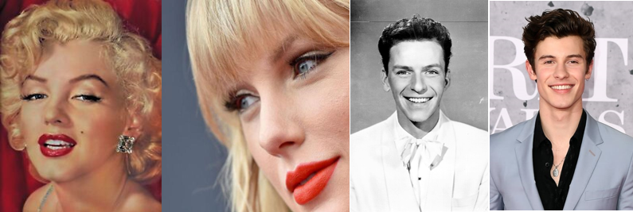

We'll see how it works ...
through this video.
INTRODUCTION
It goes without saying that many things have changed in the last 50 years. For instance, we do not write letters, we text. But, are love letters from the 60’s that different to Good Night What’s App messages? What is still in Elvis Presley’s mind {always on my mind- Elvis Presley}? Is it now the Shape of you? But it is not just the theme. It is also the words. Are songs lexically the same as before or did we get lazier as time went by? Lots of diversity of vocabulary or do we now stick to the basics? However, although trends might change, there are some that find their way back to the market. Red lipstick for example. Marilyn Monroe and her red lips caused two-thirds of teenage girls to wear this colour lipstick back in the 50’s. Sixty years later, we just needed Taylor Swift to make red lipstick great again. Is it the same with genres in music? Have they changed over the years? Is Taylor also responsible for country music to come back? Did we say goodbye to some genres? Long time, no see for others? Do genres link like they used to? Have new mixtures appeared? So this is the aim of our project: study the evolution of music over the years. What has changed, what remains, Frank Sinatra and Shawn Mendez don’t they sing (and look) the same? The limits between evolution and inspiration are blurry, but we will separate it for you fairly! Many questions coming up and we have all your answers…stay (and sing) along!
